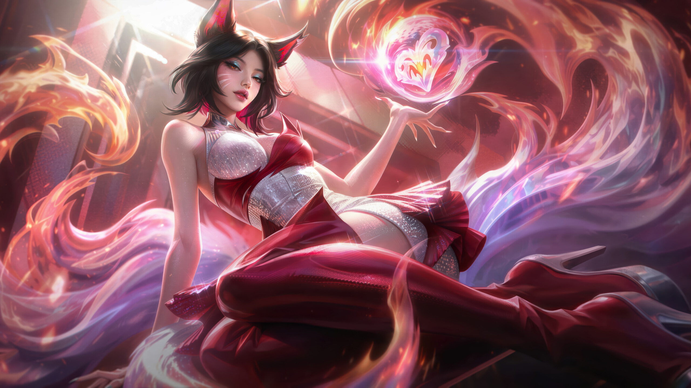
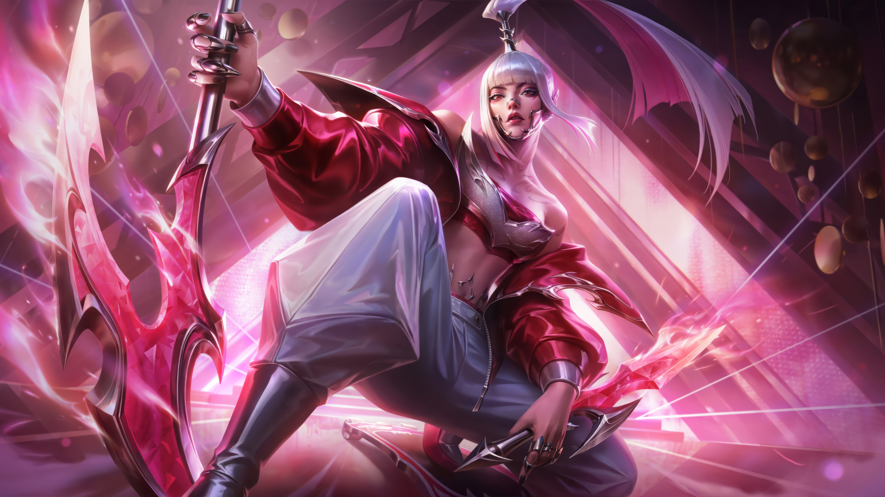
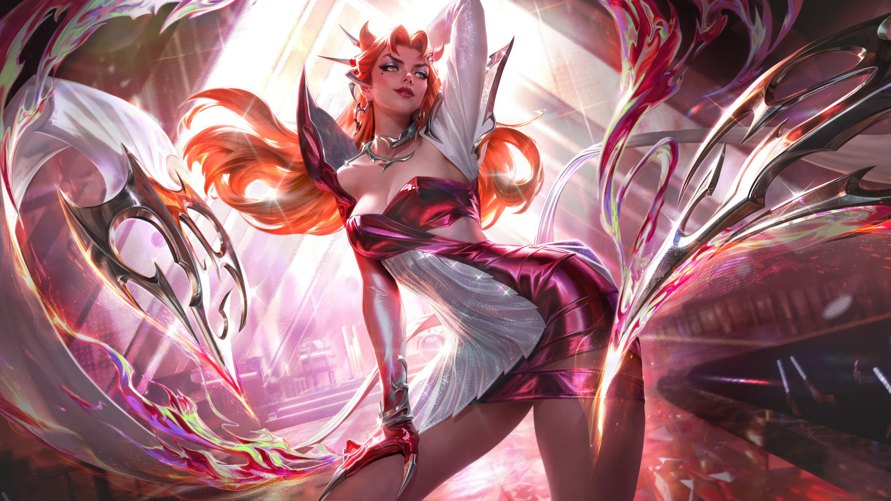
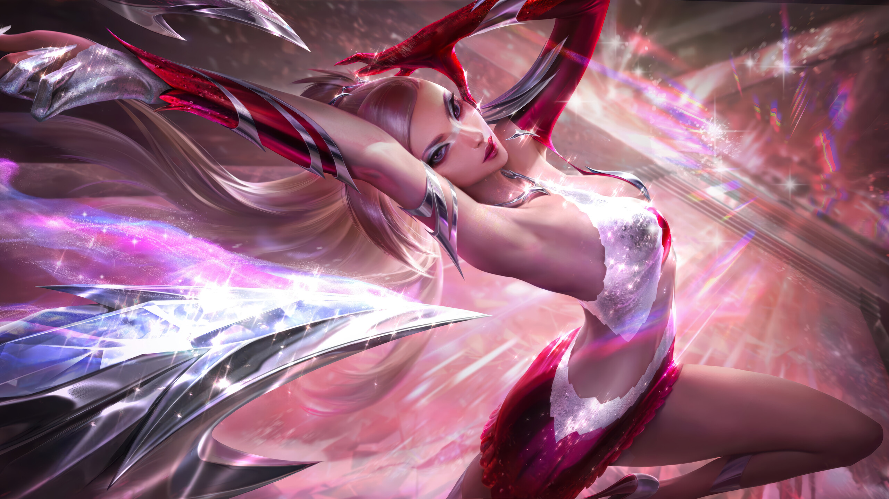

Четыре уникальных голоса и образа

Став поп-звездой в подростковом возрасте, Ари отказалась от девчачьего образа и предстала в новом амплуа: элегантной, сногсшибательной знаменитости, следящей за модой. Изящный новый образ Ари привлекает внимание ведущих модельеров. Во время Недели моды Ари дефилирует по подиумам по всему миру в вечерних платьях. Она является лицом косметики FOXY и в прошлом году выпустила собственный аромат Charmed. В свободное от работы в K/DA и тренировок время Ари ходит по магазинам, пьет чай с дизайнерами и тестирует новые косметические средства.

Акали выступает вместе с другими уличными артистами в городах, которые посещает. Сочетая смешанные боевые искусства с ритмом собственного рэпа, она восхищает публику смелыми текстами и стилем панк-ниндзя. Она начала тренироваться на улицах еще до того, как стала знаменитой, и при любой возможности возвращается к своим корням. Благодаря непослушным волосам и бунтарскому стилю Акали мгновенно стала любимицей фанатов K/DA.

Репутация Евы говорит о том, что она требовательная дива. В интервью Pop Shine она сказала: “Я артистка, а не светская львица. Я не собираюсь извиняться за высокие стандарты”. Однажды Ева ушла со сцены во время живого выступления, когда ее вокал был подкреплен аудиотреком, который она не одобрила. Хотя ее присутствие в индустрии неспокойно, у нее есть преданные поклонники, которые называют себя “Deeva”. До K/DA Эвелин выпустила два хитовых сингла - Agony's Embrace и Ecstasy.

Когда начинается музыка, во мне зарождается симфония движения. Она начинается как рокот, как зов из пустоты, голодный и требующий освобождения. Мое тело реагирует на зов, подпрыгивая, чтобы сплести историю. История о том, как оставить пустоту позади и встать на путь жизни.
| Имя | Роль в K/DA | Знак зодиака | Реальный исполнитель |
|---|---|---|---|
| Ари | Лидер, Ведущий вокал | Стрелец | Miyeon ((G)I-DLE) |
| Акали | Главный рэпер | Телец | Soyeon ((G)I-DLE) |
| Эвелинн | Ведущий вокал | Телец | Madison Beer |
| Кай'Са | Ведущий танцор | Рыбы | Jaira Burns |